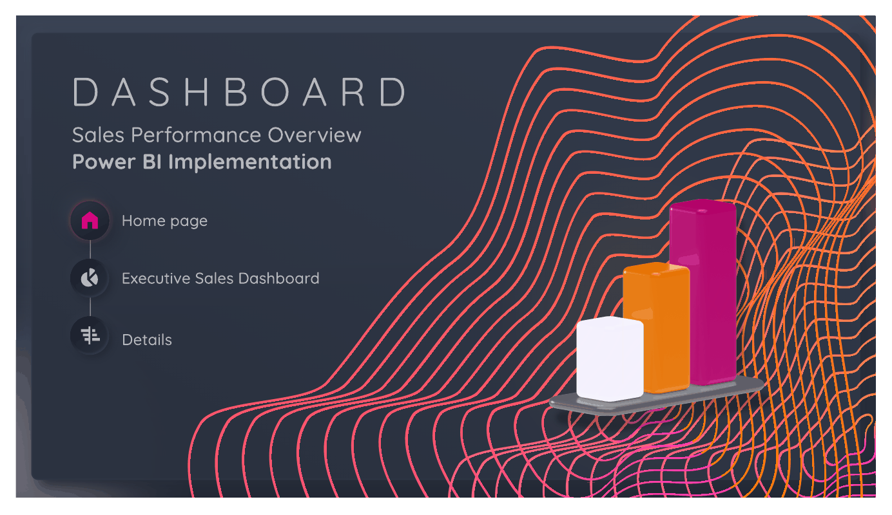

Minufiya University
Bachelor of Technology, Computers and Information Science
Sep 2018 - Jan 2023
Featured · Completed project
End-to-End Data Warehouse & Power BI Solution
Built a SQL Server data warehouse with staging, transformation and presentation layers, a star schema, and a Power BI dashboard for exploring sales, products and customers.
- Built the data warehouse architecture from scratch
- Designed database structures in SQL Server
- Loaded datasets with SQL bulk insert
- Cleaned and prepared data manually
- Organized and transformed raw data
- Developed the analytical layer
- Designed an interactive Power BI dashboard
- Produced business insights and visual reports

